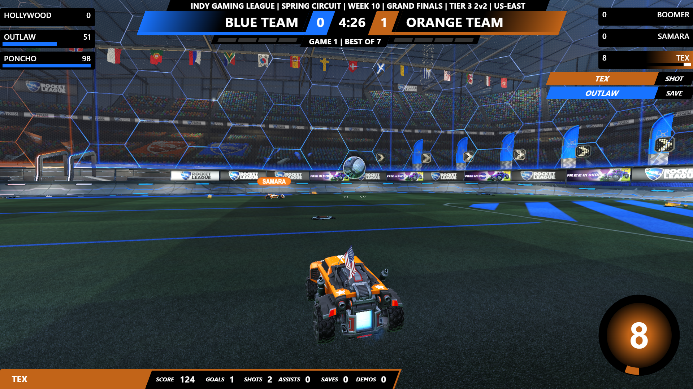
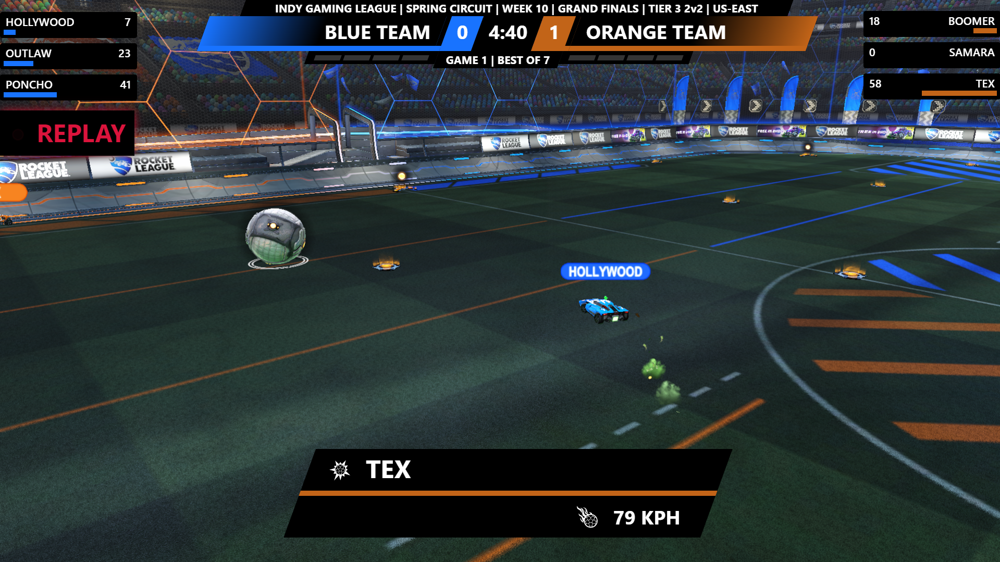
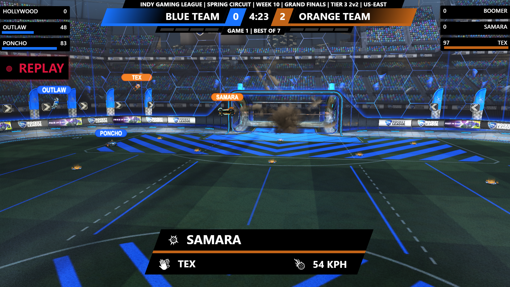
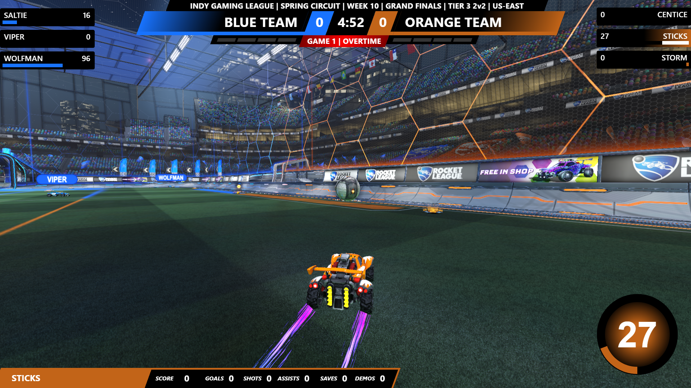

Rocket League Scoreboard
BROADCAST OVERLAY
An overlay to be used in the production of matches within the Rocket League eSport. The spectator UI in-game whilst it has no obvious flaws and is perfectly functional, there is a distict lack of detail. Whilst one solution would be to overlay an image file over the screen in the broadcasting software, overlays such as this add further detail for the viewer and after setting up before a match, is completely automated for the remainder of the match. Through the use of a plugin made for the game called Simple Overlay System (or SOS for short), you can connect via a WebSocket connection and have all game data pulled through a relay in real-time! These come in the form of events and then you can use JavaScript to alter the appearance of the overlay based on these events.
Due to the demand of such a product, I do not distribute the source code of this product. Contact matt.keddie@hotmail.co.uk via Email or kedsypoo#3795 on Discord with any queries regarding Rocket League Scoreboard Overlays.
Technologies Used
HTML
CSS
JavaScript
Date
April 2022 - Present
Showcase
Below are some screenshots of the overlay in different states, to show every screen it can show. I expect not everybody looking at this understands the game of Rocket League, so I will do my best to explain what is going on and what the overlay is showing, otherwise it might just look like a load of clutter!
Main UI - No Focussed Player
This is where for example a round has just started, showing the scoreboard at the top, which displays the Tournament Name, Tournament Stage (Week X, Day X, etc), the Team Names, Match Clock, Match Score, Series Type (and what game it is e.g. Game 3 of a Best of 5) and the series score, along with the player names of everyone on each team and how much "boost" they have. For context, boost is a resource that will spawn around the map, collecting it will allow you to travel at a faster speed, an important aspect of the game, hence showing every player's amount of the resource.
Main UI - Focussed Player (Blue Team)
This is where all of the above is displayed, but the spectator client in game is focussed on a player from the blue team (it does't necessarily have to be blue, it is labbeled as team '0' in the data, but in most cases it is blue, hence referring to it as such). It will show on the bottom of the screen the name of the focussed player, some detailed stats like how many shots/goals/etc that they have got in this game, and a boost metre in the bottom right corner (100 is full, 0 is empty). All of these elements have a blue theme as it is the blue team.
Main UI - Focussed Player (Orange Team)
As above, except it is the orange team (otherwise known as team '1' in the data).

Goal Scored - Unassisted
When a goal is scored, there is always a goal scorer and ball speed at the time the ball went into the goal attribute in the event read by the JavaScript code. There isn't necessarily always an assist for the goal. This shows the goal scorer and the ball speed as well as an indicator that it is a replay and is not the players playing live to avoid viewer confusion.

Goal Scored - Assisted
As above, but including the player name of whoever got the Assist for the goal.

Main UI - Overtime!
A Rocket League game is five minutes long, after five minutes if there is no winner then there will be overtime. This is technically infinite, although highly unlikely to go more than a few minutes with the nature of the game. Overtime follows a "next goal wins" format. If you score, you win, the other team scores, you lose! This provides for a gripping viewer experience.

Post Match - Scoreboard
When all is said and done, it is nice to see who the key performers were in a match, who did well and who maybe weren't so involved. The end game stat screen retains all data such as shots/goals/etc and spits it out into a table at the end of the match, to draw easy comparisons between players. This screen will stay active until the next game in the series starts.